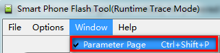
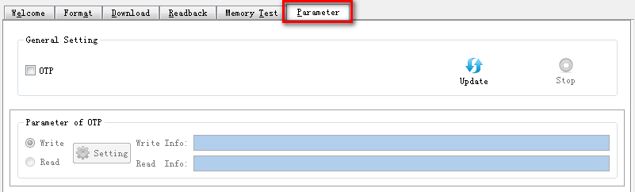
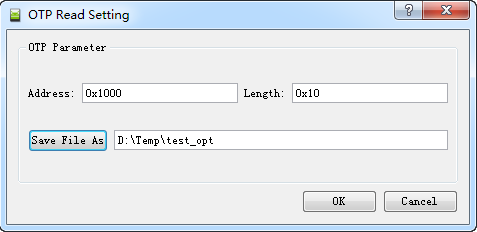
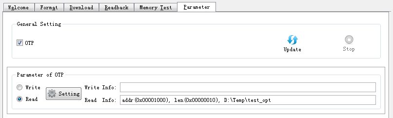
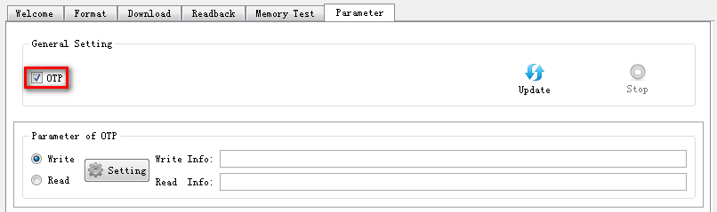
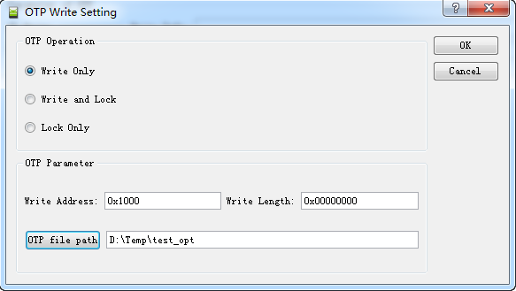
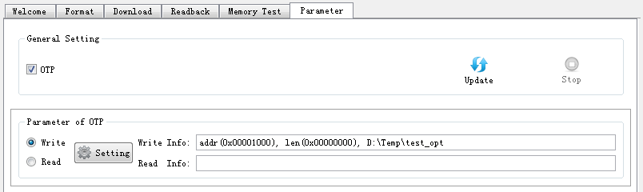

Flash tool provide read and write functions for data in OTP (One Time Programming) area.
�� Open Parameter Page
Click ��Window��->��Parameter Page�� or Ctrl + Shift + P to open Parameter Page.


�� Read OTP steps
1. Power off target
A handshake must be performed between Smart Phone Flash Tool and the target mobile phone, thus the target must initially be powered off, and connected to the PC via a download cable.
For USB download, please pull out both Cable and Battery.
2. Configure Options
Check ��OTP�� to enable ��Parameter of OTP��.
Select ��Read�� and pressing ��Setting�� to open ��OTP Read Setting�� Dialog.
In the dialog, read address, read length and file path to save the OTP data can be configured.

After pressing ��OK��, OTP read settings will be shown on the parameter page.

3. Start Read OTP
Press ��Update�� button in Parameter page to start read OTP data.
4. Power on target
Power on the target and the read OTP procedure will begin.
5. Stop read OTP
Note that to interrupt the read OTP process at any time, press the stop button or f10.
�� Read OTP Process Show
Connection:
�� Write OTP steps
1. Power off target
A handshake must be performed between Smart Phone Flash Tool and the target mobile phone, thus the target must initially be powered off, and connected to the PC via a download cable.
For USB download, please pull out both Cable and Battery.
2. Configure Options
Check ��OTP�� to enable ��Parameter of OTP��.

Select ��Write�� and pressing ��Setting�� to open ��OTP Write Setting�� Dialog.
In the dialog, OTP operation, write address, Write length and file path of the file contains OTP data can be configured.

After pressing ��OK��, the write settings will be shown on the parameter page.

3. Start Format
Press ��Update�� button in Parameter page to start write OTP data.
4. Power on target
Power on the target and the Write OTP procedure will begin.
5. Stop read OTP
Note that to interrupt the Write OTP process at any time, press the stop button or f10.
�� Write OTP Process Show
Connection: